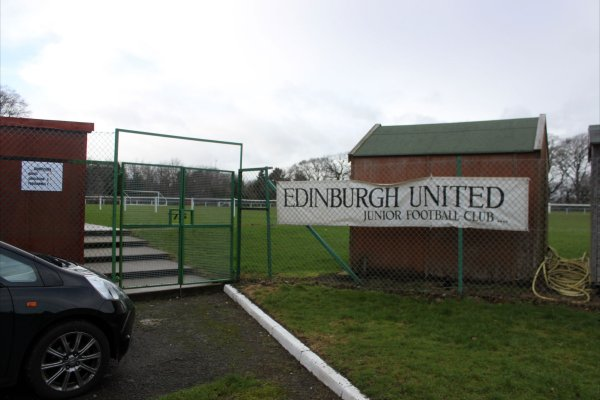

Edinburgh United FC are 4th in the league, 5 points of second.

Edinburgh United play in 6th Tier of scottish football.
Edinburgh United Football Club is a Scottish football club, based in the Colinton area of Edinburgh.
Formed in 1985, the team competes in the East of Scotland Football League First Division Conference B,
having moved from the junior leagues in 2018. The club play their home games at Paties Road Recreation
Ground in the south-west of the city, which holds around 2,500 spectators and features a 200 seater stand.
The team play in black and white strips.